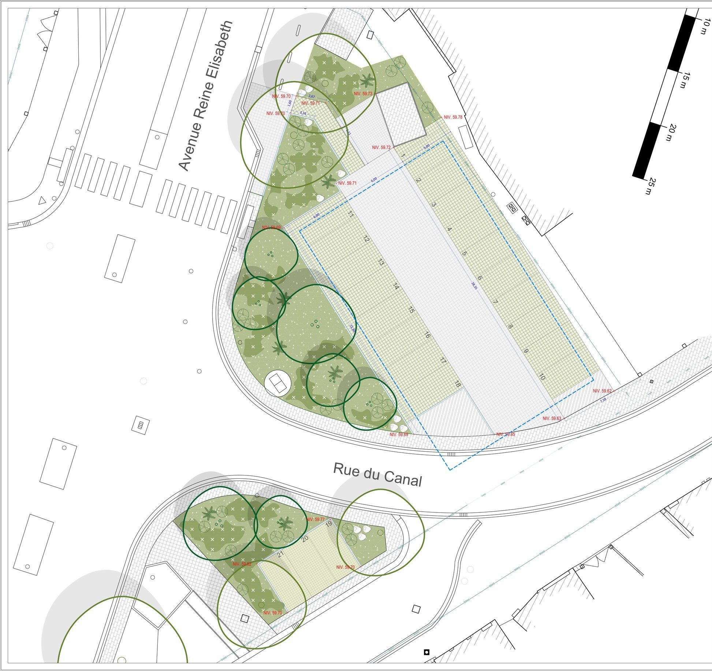

Place bioclimatique
Végétaliser la place communale de Haccourt en transformant le sol lui-même — un avant-projet dessiné à l'Atelier CUP pour la Commune d'Oupeye.
- Lieu
- Place communale, Haccourt (Oupeye)
- Maître d'ouvrage
- Commune d'Oupeye
- Agence
- Atelier CUP — Liège
- Phase
- Avant-projet — échelle 1/100
- Rôle
- Dessin des planches AVP
- Partenaire
- Géomètres Maréchal & Baudinet

Projet mené en agence : la végétalisation de la place communale de Haccourt, pour la Commune d'Oupeye. Il est développé par l'Atelier CUP (Liège), où je travaille comme étudiant, en collaboration avec le bureau de géomètres Maréchal & Baudinet. Les deux planches présentées ici sont les plans d'avant-projet que j'ai dessinés, à l'échelle 1/100.
La place est repensée comme une place bioclimatique : une partie des surfaces minérales cède la place à des dalles drainantes à joints engazonnés et à des zones d'infiltration plantées, qui laissent l'eau de pluie rejoindre le sol là où elle tombe plutôt que de la renvoyer directement au réseau.
Il s'agit moins d'ajouter du végétal décoratif que de transformer le sol lui-même.
Les arbres existants sont relevés et conservés ; de nouveaux sujets — haute-tige et multi-troncs — complètent le couvert pour porter de l'ombre sur les zones de séjour. Massifs mixtes d'arbustes et de vivaces, enrochements de grès et ganivelles dessinent les limites sans les fermer.
L'aménagement accompagne les usages du quotidien : bancs en béton architectonique, tables, fontaine à eau, arceaux vélos et lampadaires solaires. Le nivellement, relevé au centimètre entre 59,6 et 60,6 m, arbitre en permanence entre niveaux projetés et niveaux existants maintenus — c'est là que se joue concrètement l'écoulement de l'eau.

- Dalles béton pleines 25×25×10 cm — teinte blanc
- Dalles drainantes à joints engazonnés 21×21×10 cm — teinte blanc
- Zones d'infiltration
- Massifs mixtes (arbustes / vivaces)
- Arbres haute-tige et multi-troncs projetés
- Arbres existants conservés
- Enrochement de grès
- Bancs béton architectonique
- Tables
- Fontaine à eau
- Lampadaires solaires
- Arceaux vélos
- Poubelles
- Bordures ID2
- Clôtures et ganivelles
- Niveaux projetés / existants maintenus
- Réseau SWDE